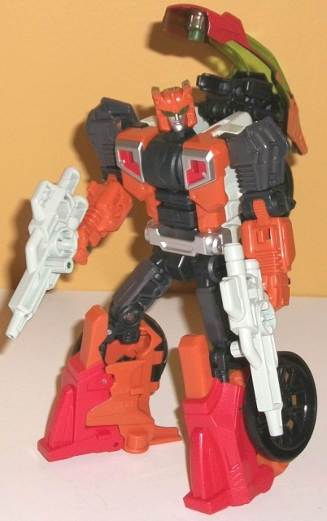
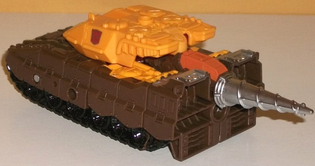

Computron
Giftset (Combiner Wars) [Online Retailer Exclusive]
Computron
Giftset (Combiner Wars) [Online Retailer Exclusive]
Allegiances
: Autobot
Set Price
: $100 (U.S.)
(NOTE: Because this set is composed of repaints,
this is not a full-blown review. This mainly covers any changes made to
the set and the color scheme, and merely compares it to the original versions
of these molds. For a review on deluxe Groove-- the mold used for Afterbreaker--
go
here
. For a review on Streetwise-- the mold
used for Lightsteed-- go
here
. For a review
on Brawl-- the mold used for Nosecone-- go
here
.
For a review on the mass-release Scattershot, go
here
.
For a review on Cosmos w/ Payload-- the molds used for Scrounge and Cybaxx,
respectively-- go
here
. For a review on Air
Raid-- the mold used for Strafe-- go
here
.)
Afterbreaker

Size
: Deluxe
Difficulty of Transformation to Robot
:
Easy
Difficulty of Transformation to Leg
:
Very Easy
Difficulty of Transformation to Arm
:
Easy
Color Scheme
: Dull pumpkin orange,
charcoal black, and some red, very light chalky gray, transparent forest
green, and silver
Individual Rating
: 9.3
"Afterbreaker" is the
newest copyright-friendly name for G1 Afterburner, a Technobot who was
a futuristic motorcycle-like vehicle. Thus, it makes sense Afterbreaker
would be a remold of deluxe CW Groove. The overall color scheme is mostly
a dull pumpkin orange and charcoal black-- considerably more black than
on the G1 toy, which I approve of as the G1 toy could be a bit one-tone.
These two colors go together fairly well, though I wish the charcoal black
was a bit more "pure" for better contrast. There's also a decent amount
of red paint on the robot chest, legs/seat, and around the windshield.
It's a nice enough color, but right up against the orange it's a bit too
close to effectively complmenent or contrast; it should've been a bit darker,
methinks. The red DOES go quite well against the silver paint on the chest,
the waist, and the robot face. Additionally there's a big chunk of light
chalky gray used on the back of the robot/main body of the motorcycle,
which is an okay light shade but feels a bit out-of-place on the toy, being
used just that one place and nowhere else (as far as plastic goes). My
favorite color on Afterbreaker is definitely the transparent forest green,
which is mostly used on the windshield and the light piping for the robot
eyes. (It's also used for the guns, but this is mostly painted over with
the light gray, unfortunately-- I think transparent green guns would've
looked awesome.) The green goes EXCEEDINGLY well against basically every
other color on the toy, but the orange in particular. It's also just a
nice shade for an accent color, itself.
Afterbreaker has two
mold changes; first, he has a new headsculpt, which looks great as a modern
update of his G1 self, with large, angular green eyes, a stern silver face,
and an angular orange "helmet". All the details are nice and crisp, too.
To make the motorcycle mode look more futuristic, the windshield has been
changed to a much longer, aerodyanmic design, and looks pretty darned cool
in vehicle mode. That said, in robot mode it means Afterbreaker has a larger
extra hanging off his upper back, so that's a minus, though overall I think
it's a slight positive change to the mold.
Cybaxx

Size
: Legends-scaled Targetmaster
Difficulty of Transformations
: Very
Easy
Color Scheme
: Semi-metallic golden
yellow and some red
Individual Rating
: 5.2
"Cybaxx" is a trademark-friendly
name for Boltax, who was known for basically being a completely gold Transformer
in the Marvel G1 comics with no real alt mode. Here, Cybaxx is a simple
redeco of Payload, so he's a spiffy gold space shuttle. The shade used
for the plastic is really nice, and has a bit of a sparkle to it, with
a bit of glitter, so it looks semi-metallic. It's a very pretty shade.
That said, I wish Cybaxx wasn't SOLELY this color-- he's got some red on
the shuttle cockpit windows and on the face in robot mode, but that's it.
There's not much to Cybaxx. It's a nice (really) obscure homage, but I
wish they had changed up his color scheme at least a little more with a
few more paint apps.
No mold changes have
been made to Cybaxx.
Lightsteed
Size
: Deluxe
Difficulty of Transformation to Robot
:
Easy
Difficulty of Transformation to Leg
:
Very Easy
Difficulty of Transformation to Arm
:
Easy
Color Scheme
: Red, very light chalky
gray, and some black, silver, blue, and moderately pale red
Individual Rating
: 8.9
Lightsteed is a pretty
aerodynamic car like his G1 version (name changed from "Lightspeed" for
copyright reasons), and the face sculpt from Streetwise works fairly well
as Lightspeed's head, but otherwise this is definitely the biggest "stretch"
for any of the Technobots when it comes to how well the mold fits the toy.
Having a aerodynamic police car take the place of a Cybertronian speedster
is, well... I think at least Lightsteed needed a reshelling of the mold
similar to how Streetwise was changed from
Dead
End
. Lightsteed's basic color scheme of red, a very light gray, and
a bit of black (on the tires and gun) is accurate to the G1 toy, but the
way the colors are broken up on this toy doesn't look so hot. Particularly
in vehicle mode it's very bland, with not even the areas around the windows
painted red-- it's allll that light chalky gray, and just looks boring
as all get out. There's some silver paint on the headlights and wheel hubs,
but there's no paint apps at all on the back end of this mode-- no taillights
no rear window paint, no nothing. In the middle of this mode, there's some
light red paint used near the top halves of the car doors, but the red
paint used is definitely of a slightly lighter, paler color than the red
plastic, so it sticks out a bit, unfortunately. Otherwise he's all red
and chalky gray-- and the red isn't a particularly attractive or amazing
shade either. In robot mode there's some silver on the lower legs, on the
chest, and some silver on the face w/ some nice blue eyes, but that's about
it as far as robot paint apps, too. Thus NEITHER mode really looks that
great, and is generally boring in addition to looking incomplete in vehicle
mode. He looks more like a partially unfinished prototype instead of a
final product-- Lightsteed is easily the low point of this set, despite
the strength of the mold.
No mold changes have
been made to Lightsteed.
Nosecone

Size
: Deluxe
Difficulty of Transformation to Robot
:
Easy
Difficulty of Transformation to Leg
:
Very Easy
Difficulty of Transformation to Arm
:
Easy
Color Scheme
: Orangish "cheesy"
yellow, dark brown, black, and some silver, fuchsia, and dull pumpkin orange
Individual Rating
: 7.5
Nosecone's original G1
form was a drill tank, so Brawl's mold fits the "tank" part of that description
quite well. The color scheme is about as close as you can get to G1 Nosecone's
while still being a fairly realistic tank, in terms of color breakup. The
main two colors are an orangish "cheesy" yellow-- pretty much the same
shade that you'd see on many movie Bumblebee toys-- and some dark brown
on most of the rest of the body, with some nice black paint on the tread
detailing. The brown and yellow work together pretty well, and definitely
give Nosecone a very "earthy" look, which of course fits a drill tank to
a tee. That said, I like the yellow detailing on the lower robot legs,
the head, and a few other minor parts, and not so much on the whole top
portion of the tank body. It doesn't really fit the G1 toy, and just that
much of that color without any other paint apps on the top to help break
it up does not really go well on a tank. There's some silver paint on the
drill, feet, and waist, and that contrasts pretty well against the brown.
There's also some dull pumpkin orange on the window behind the drill and
on the faceplate and eyes on the head, which complements both the yellow
and the brown quite nicely. (That said, Nosecone really should have had
a new headsculpt-- he did NOT have a faceplate in G1, so letting him have
Brawl's head just doesn't fit.) The color that I think REALLY goes well
against the others as an accent color is the fuchsia plastic, which is
used on the wheels and a few hinges-- in other words, not much. I kinda
wish the turret had been fuchsia with some yellow and light brown, as the
fuchsia just looks really nice against the other colors-- too nice to only
be used on a few minor parts.
Nosecone has a new part--
instead of the cannon on the front of the turret, Nosecone has a drill
accessory with a futuristic-looking cockpit behind it, colored muddy orangish
brown. The mold detailing is quite solid, and it works nicely as an accessory
on the side of the lower arms in robot mode, too. That said, the instructions
recommend the vehicle mode being backwards, and it just looks weird and
too obviously "a tank backwards", even though the teeth-like "grinder"
detailing on the back end makes it look at least a little better. If you
put the drill on the front of the tank like Brawl's turret piece, though,
it's too long. Other than the drill piece, no mold changes have been made
to Nosecone.
Scattershot
Size
: Voyager
Difficulty of Transformation to Robot
:
Easy
Difficulty of Transformation to Torso
:
Medium
Color Scheme
: Fuchsia, red, very
light chalky gray, and some light sky blue, pale red, dull gold, and blue
Individual Rating
: 8.9
Compared to his mass-release
version, this version of Combiner Wars Scattershot has a more intricate,
varied color scheme that may not necessarily be more G1-accurate, but it
certainly looks quite good. His main colors are two shades of red-- a fairly
"standard" red and fuchsia-- both of which complement each other quite
well. The main contrast color against the reds is the very light chalky
gray plastic used on most of the other Technobots, and is used mostly on
the nosecone, lower arms, robot head, upper legs, and parts of the wings
and some other minor parts. Although I think this color is bland on the
other Technobots, on Scattershot in the amounts that it's used it works
quite well, giving the toy some much-needed contrast between the various
shades of red. (That said, I think a more "pure" white would've looked
even better.) The gray looks particularly good next to the light and medium
blue used on Scattershot; the blue is used as an excellent accent color
on the toy, from little stripes on the wings, nosecone, cockpit windows,
lower arms, robot chest and visor, and on some nice G1-esque decals on
the upper combined mode chest. The two shades of blue just really pop.
The way these main colors are used throughout the toy make it very eye-catching
and are broken up quite well. Finally, there's another shade of red-- pale
red-- which is used primarily on the gun and combined mode chest, as well
as on the gestalt head faceplate. I'm not as big of a fan of this color--
it looks "unfinished" somehow.
No mold changes have
been made to this version of Scattershot.
Scrounge
Size:
Legend
Difficulty of Transformation
: Medium
Color Scheme
: Semi-metallic golden
yellow and some red, silver, and blue
Individual Rating
: 8.9
SCROUNGE! Oh man, I have
been wanting a toy of this guy forever. He's been a recurring "joke" character
in the TF comics, basically a poor drug-addicted bum who transforms into...
a wheel. Yup, just a wheel. Of course, making a toy that becomes a wheel
isn't really feasible for Hasbro, so instead redecoing him from Cosmos--
a circular UFO-- is a pretty darned smart idea. He's nearly all yellow
in the comics, so he's nearly all yellow here, as well. The yellow-- just
like with Cybaxx-- is a nice golden, semi-metallic shade with some glitter
mixed in, but again, I wish at least one other plastic color had been used
on him to help break things up a little. Most of his paint apps are red,
and although I wish they were used a bit more on him, where they are used
they help add some visual interest. The "arrow-like" details on the top
of the saucer mode, curved lines on the robot shoulders, and red on the
robot eyes, rear thrusters, waist, and front UFO guns all look good. My
favorite added color is the blue used for the windows, which just is a
really nice shade of the color and goes GREAT with the yellow-- I really
wish it was used considerably more on the toy. The red "lining" around
the windows is nice too, and Scrounge also has a bit of silver on his chest
and waist, but it's not enough to really add much to the color scheme.
Scrounge has a new head
mold, which fits his comic head pretty darned well. He's got the little
"fin"-like antenna on the top of his head and large triangular red eyes,
along with a round "gas-mask-like" mouth-- otherwise, his is a fairly smooth
round head, which again, fits how he's traditionally looked. That said,
because of the shape of the top of the head it's rather obvious in vehicle
mode-- at least, more obvious than Cosmos' head.
Strafe

Size
: Deluxe
Difficulty of Transformation to Robot
:
Easy
Difficulty of Transformation to Leg
:
Very Easy
Difficulty of Transformation to Arm
:
Very Easy
Color Scheme
: Very light chalky
gray, red, dull pumpkin orange, and some glossy fuchsia, silver, and bronzish
silver
Individual Rating
: 8.1
Strafe is the only one
out of the set that has substantial mold changes made just for him, so
as opposed to the other Technobots, I'll cover the mold changes first off.
The most obvious changes from the CW Air Raid mold are that the nosecone
section and wings have been changed for vehicle mode, to make Strafe look
a lot more like a futuristic aircraft instead of just another Earth jet.
The jet nosecone is now a really nice-looking, angular cockpit with two
long side guns. There's a peg on the top of this part, which fits perfectly
into the bottom of Scrounge's UFO mode, which is a rather creative way
of getting Scrounge to peg into the combiner mode. The main side wings
have been replaced with teeny little wing flaps, with have some nice diagonal
details, but unfortunately it doesn't hide the arms even as well as Air
Raid's rather poor job, so that's a bit of a downer. In compensation for
these teeny wings, though, Strafe has long rear wings, with little fins
on the top and ends (unfortunately this means he has big honkin' extras
hanging off his lower robot legs). Even though the top tailfins are still
the same as on Air Raid it all makes for a very obviously futuristic alt
mode that definitely is a fair bit different from your average jet. Strafe
also has a new headsculpt in robot mode, which is pretty accurate to his
G1 toy, with a rather large red visor and chin, and a somewhat thick, square,
light gray helmet.
As far as Strafe's color
scheme, it is G1-accurate overall, but it's a bit dull. The main color
of light chalky gray is just rather bland-- I would've preferred a more
straightforward white, which would also make it more G1-accurate as a side
bonus. The pumpkin orange on the main two guns in vehicle mode as well
as the chest and some minor parts in robot mode looks pretty good, and
at least contrasts well with the gray. The red on the rear wings, lower
legs, small "front" wings, and on the sides of the front jet section is
a decent color, but the areas that have just that color and the light gray
look rather boring and suffer from the same bland, "slightly unfinished"
issues that pretty much all of Lightsteed suffers from. My favorite added
color is the fuchsia on Strafe's chest, but other than that it's not used
on the toy at all-- to heck with G1 accuracy, I wish this color was used
a lot more on this toy, it's a nice shade that complements the orange and
contrasts against the gray well enough. There's also a bit of silver on
the rear wings, some black on the jet cockpit window, and a rather odd
shade of bronzish silver on Strafe's "belt" and kneecaps, which looks kinda
weird honestly and I wish had been a more straightforward silver.
Computron
(Combined Form)
Individual Rating
: 9.4
Computron is a pretty
impressive combiner, with not just the main five components but also two
extra TFs added onto the shoulder if you so choose. You'd think adding
two extra TFs on the arm (in its "recommended" configuration, as pictured
above) would make him look unbalanced, but the added bulk of Scrounge &
Cybaxx actually works since Afterbreaker's windshield and front wheel stick
out so far on the other arm. Computron is still certainly made up of different
components, but there's more common colors-- or a common segment of the
color wheel-- shared among his entire body. The various shades of red,
orange, yellow, dark red, and brown all go together quite well on this
spectrum-- it's a nice mix of colors overall, with the gray-white and especially
the light blue paint apps on the main body and upper legs serving as some
lighter contrast (though, again, I wish the white was a bit more "pure").
It's a darned shame that Computron has no new gestalt head, though-- there's
some similarities, but passing off Superion's head as Computron is NOT
cool and a major detail that should've been changed-- it's not "close enough".
Computron's a bit different from the previous Combiner Wars boxsets in
that he has completely new fist and foot pieces, the former of which can
slide into the bottom of the latter for easier storage when they're not
being used. They look great in this mode, with nice, beefy hands and the
feet adding some more stability and elevation while also having ankle tilts,
so Computron is definitely a bit more stable than most other CW gestalts.
However, the price of this is that these pieces can't really be used as
weapons or anything for any of the components-- they're very obviously
fists and legs, no matter where you put them; there's no other possible
use for them or easy means of storage.
The Computron giftset
is my most-recommended out of all the exclusive Combiner Wars giftsets,
in terms of making a new gestalt and not merely re-decoing an existing
one with new colors. The colors go extremely well together in combined
mode, the colors on Nosecone and Scattorshot are great, the mold changes
on Strafe and Afterbreaker are really nicely done to make them both look
futuristic, and of course Scrounge FINALLY having a toy is a really nice
bonus. The lack of a new gestalt head and the general "unfinished" look
of Lightsteed are downsides, but overall this is a pretty darned solid
Computron update.
Computron Bio
:
Of all the Combiner robots, Computron
is the most successful at merging the different personalities of his component
bots. Computron processes input from each of the Technobots and evaluates
all possible outcomes to identify the perfect plan of attack. He's never
wrong, but he's rarely fast.
Reviews by Beastbot
Back to Transformers:
Generations Index